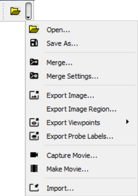

Merging¶
User can merge following file formats,
CAX files (*.cax)
vpt files (*.vpt)
Hotspot files (*.hotspot)
Grouped Files (*.grouped)
Precondition: A CAX file should have been loaded.
Merging CAX files
User can merge more than one CAX models with existing CAX model into the scene. It allows user to visualize all models in a single scene. It helps user to compare model geometry, topology, dimensions and CAE results. Models can be transformed if they are overlapping. The following procedure describes the steps to merge CAX files.
Make sure that a CAX model is loaded.
Use Merge Settings options to place model to be merged accordingly.
Click ‘Merge’ option in file toolbar drop down list.
.
Select a CAX file in the file browser dialog.
Click ‘Open’.
Model will be merged.
Merge Settings
Show Model Labels
Displays Merged Model names as labels.
Position Merged File
User can position the merged model left, right, top,bottom of the existing model.
custom Position
User can transform relative to current model or can transform to absolute position.
Set Translation/Rotation/Scale
User has to set Translation/Rotation/Scaling separately.
Apply Current Settings
Applies current model settings to the model to be merged.
Apply
Applies the transformations to model.
Close
Closes dialog.
User can place the merged model according to the following options
As Is
places without any transformations. If user is merging a cax file which has similar model, then it will overlap with existing model.
Left
places the merging model to the left of the existing model.
Right
places the merging model to the right of the existing model.
Top
places the merging model to the above the existing model.
Bottom
places the merging model to the below the existing
Custom Transform-Relative
User can set transformation values. This transformation is considered as relative to current model transformations.
Custom Transform-Absolute
User can set transformation values. This transformation is absolute and not relative to existing models.
Merging VPT files
User can merge VCollab supported viewpoint *.vpt files. A vpt file contains view, orientation and CAE states as viewpaths.VCollab Pro reads view path data from the file and appends them with existing viewpath.
Note: viewpoints will successfully be merged only if viewpoint model data is applicable for current existing model.
Merging Hotspot files
A hotspot file (*.hotspot) contains CAE Model hotspot nodal/element IDs. VCollab Pro reads the files and generate probe labels with current settings.
Merging Grouped files
A .grouped file contains list of node/element IDs with CAE results and its values VCollab Pro reads and generates labels with node/element ids and list of results and values. It helps to compare the result values with current model result values.